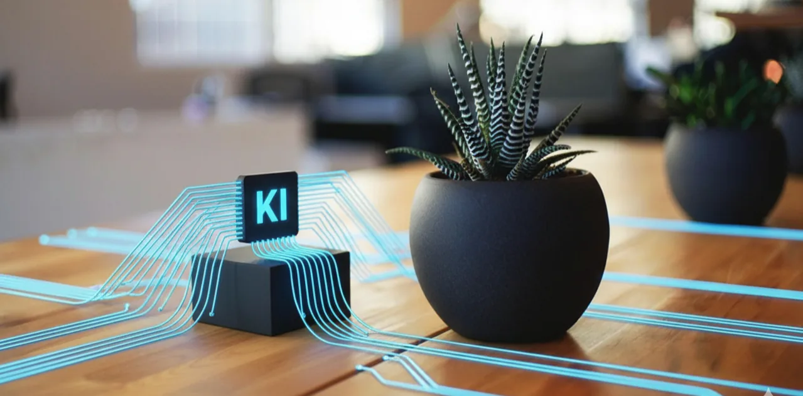
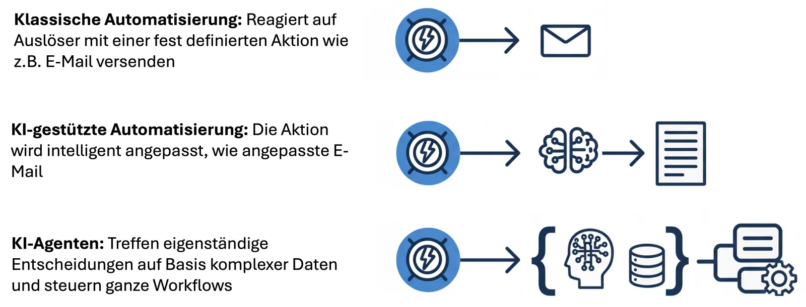
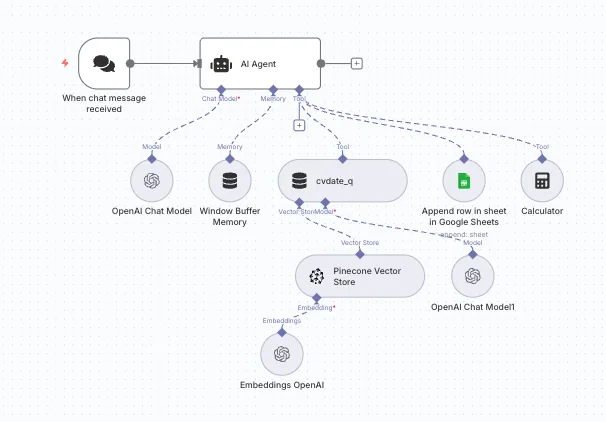

Von klassischer Prozessautomatisierung bis zu autonomen KI-Agenten – wir implementieren skalierbare Lösungen, die Ihr Unternehmen effizienter machen.
Workflow-Automation bezeichnet die Digitalisierung und Automatisierung wiederkehrender Geschäftsprozesse. Statt manuelle Aufgaben immer wieder von Hand auszuführen, übernehmen intelligente Systeme diese Arbeit – zuverlässig, fehlerfrei und rund um die Uhr.
Mit modernen Low-Code-Plattformen wie n8n und Make.com können Workflows visuell gestaltet werden – ohne tiefe Programmierkenntnisse. Das macht Automatisierung zugänglich für Unternehmen jeder Größe.

Automation entwickelt sich – von einfachen Regeln bis zu autonomen Entscheidungen.
Vordefinierte Antworten auf spezifische Auslöser. Geeignet für regelbasierte, repetitive Prozesse mit klaren If-Then-Logiken.
Intelligente Anpassung von Aktionen basierend auf Kontext – z.B. personalisierte Inhaltserstellung oder dynamische Entscheidungen.
Autonome Entscheidungsfindung auf Basis komplexer Datenlage. Agenten planen, priorisieren und handeln selbstständig im definierten Rahmen.
Routineaufgaben eliminieren – strategischen Fokus gewinnen.
Ressourcen schonen durch automatisierte, skalierbare Prozesse.
Konsistente Qualität durch regelbasierte Ausführung.
Wachstum ohne proportionalen Personalaufbau ermöglichen.
Mehr Motivation durch anspruchsvollere, wertstiftende Arbeit.
Prozesse laufen ohne Unterbrechung – auch außerhalb der Bürozeiten.
Ein Beispiel für KI-gestützte Automation: Ein intelligenter Chatbot, der Dokumente versteht, kontextuell antwortet und Gespräche protokolliert – vollautomatisch.
